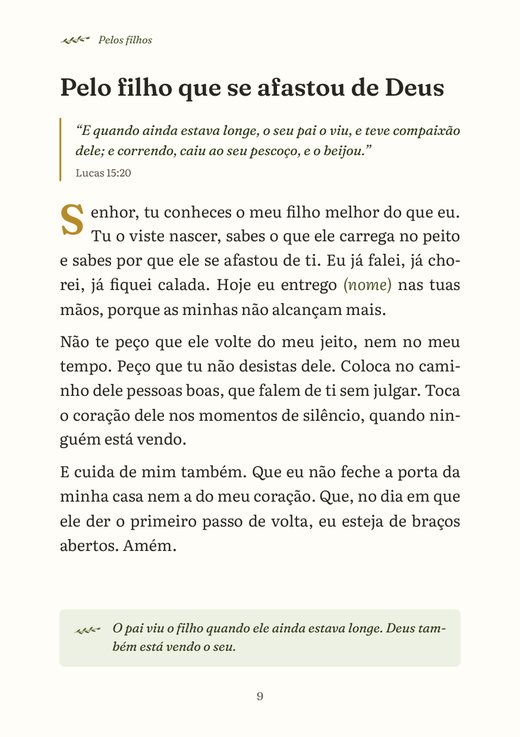
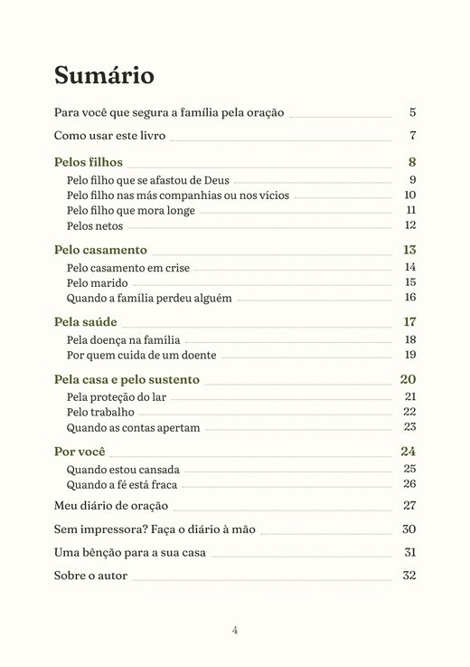
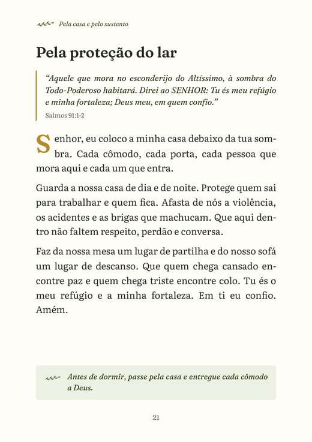
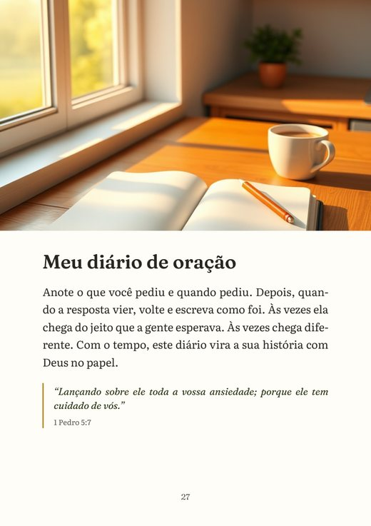
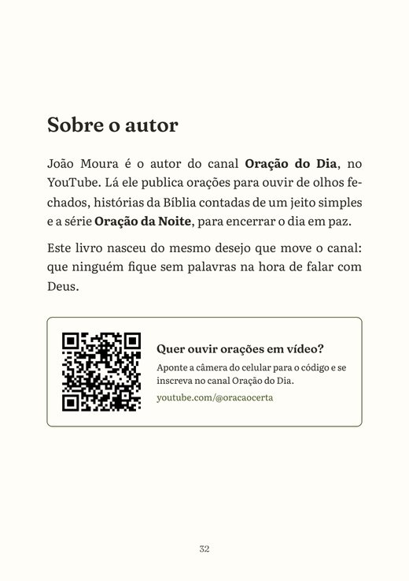

Orações para entregar sua família nas mãos de Deus
Para quando a aflição é tanta que as palavras somem. 14 orações com palavras simples, cada uma com um versículo da Bíblia.
R$14,90
E-book em PDF de 33 páginas, que chega na hora no seu e-mail. Garantia de 7 dias.
Quero as 14 oraçõesAs orações do livro, por situação:
- Pelos filhos4 orações
- Pelo casamento3 orações
- Pela saúde2 orações
- Pela casa e pelo sustento3 orações
- Por você2 orações
E um diário de oração para anotar os pedidos e as respostas.
Você quer entregar a família a Deus, mas na hora as palavras não vêm
Quando a casa fica em silêncio, os pensamentos não param. O filho que se afastou. A saúde de alguém querido. A conta que vence na sexta.
Você fecha os olhos para orar, e a preocupação fala mais alto. A oração vira uma lista de aflições, ou nem começa.
E você, que cuida de todo mundo, termina a noite sem ter quem cuide de você.
Deus não está esperando uma oração perfeita
Ele está esperando você. Ficar sem palavras na hora da aflição acontece com quem ama muito, e não é falta de fé.
O livro segura a sua mão no começo. A oração já vem escrita, com palavras simples. Onde aparece (nome), você diz o nome de quem você ama. Aos poucos, você encontra as suas próprias palavras.

Por que é tão difícil orar pela família todo dia
A aflição embaralha tudo
Quando o coração aperta, a cabeça corre de um problema para outro, e fica difícil dizer a Deus o que você sente.
Não sabe por onde começar
A Bíblia é grande. Na hora da angústia, achar o versículo certo para aquela situação parece impossível.
A resposta passa despercebida
Sem anotar, a gente esquece o que pediu e não percebe quando Deus respondeu, do jeito e no tempo dele.
Com o livro, você abre na aflição de hoje e ora
Não precisa ler na ordem. Procure no sumário a situação que está apertando o seu coração e comece por ela. Bastam poucos minutos e um cantinho quieto.
- Procure a situação de hoje no sumário.
- Leia o versículo e a oração devagar, dizendo o nome de quem você ama.
- Guarde a frase curta no coração durante o dia.
- Anote o pedido no diário e volte quando a resposta vier.
O que vem em cada uma das 14 orações
Um versículo
Uma frase da Bíblia para começar ouvindo Deus.
A oração
Escrita com palavras simples, como uma conversa.
O nome
Onde aparece (nome), você diz quem você ama.
Uma frase
Curta, para guardar no coração durante o dia.
O diário
Para anotar o pedido, a data e como Deus respondeu.
Veja o livro por dentro antes de comprar



Este livro é para você?
É para você se
- É mãe, avó, esposa ou filha e carrega a família no coração.
- Quer orar pelos seus, mas na hora da aflição as palavras somem.
- Prefere orações curtas, com palavras simples e versículo da Bíblia.
- É de família católica ou evangélica. O livro serve para as duas.
Não é para você se
- Procura um livro impresso, de papel. Este é digital, em PDF (você pode imprimir em casa).
- Espera uma fórmula com garantia de resultado. As orações são um jeito de abrir o coração a Deus.
- Quer um estudo bíblico aprofundado.

Quem escreveu
João Moura é o autor do canal Oração do Dia, no YouTube, onde publica orações para ouvir de olhos fechados, histórias da Bíblia contadas de um jeito simples e a série Oração da Noite.
O livro nasceu do mesmo desejo do canal: que ninguém fique sem palavras na hora de falar com Deus.
Os versículos são da Bíblia Livre, e o livro tem um código para ouvir as orações em vídeo no canal.
Tudo o que você recebe
- 14 orações com versículo da Bíblia33 páginas
- Filhos, casamento, saúde, casa e você5 partes
- Uma frase para guardar no coraçãoem cada oração
- Diário de oração para imprimirpedidos e respostas
- Modelo do diário feito à mãosem impressora
O livro completo, em PDF
R$14,90
Quero as 14 oraçõesPagamento seguro pela Hotmart, no Pix, no boleto ou no cartão. O livro chega no seu e-mail logo depois do pagamento.
Garantia de 7 dias. Se não gostar, peça o dinheiro de volta pela Hotmart em até 7 dias depois da compra. Você recebe tudo de volta, sem precisar explicar o motivo.
Perguntas que costumam aparecer
Como eu recebo o livro?
Logo depois do pagamento, a Hotmart manda um e-mail com o acesso. O livro fica na área de membros da Hotmart para baixar quando quiser, quantas vezes quiser. No Pix e no cartão, chega na hora. No boleto, depois que o banco confirma o pagamento.
Preciso imprimir?
Não. Dá para ler no celular, no tablet ou no computador. O diário de oração pode ser impresso, e quem não tem impressora encontra no livro um modelo para fazer à mão, num caderno comum.
Serve para família católica e evangélica?
Serve. As orações são dirigidas a Deus, com versículos da Bíblia, sem doutrina de uma igreja específica.
Preciso ler na ordem?
Não. Cada oração é para uma situação. Procure no sumário a que está apertando o seu coração hoje e comece por ela.
As orações garantem que o pedido será atendido?
Não. Estas orações não são fórmula nem garantia de resultado. São um jeito de abrir o coração a Deus. O livro também não substitui o acompanhamento de médicos, psicólogos ou outros profissionais.
É um livro de papel?
Não. É um e-book em PDF. Nada é enviado pelo correio.
E se eu não gostar?
Você tem 7 dias de garantia. Pede o reembolso pela Hotmart e recebe todo o valor de volta.
Tenho uma dúvida que não está aqui
Escreva para atendimento.editorajm@gmail.com.
Hoje à noite, entregue a Deus quem você ama
14 orações para a sua família, com versículo, frase para guardar e diário, por R$ 14,90.
Quero as 14 oraçõesGarantia de 7 dias · Chega no seu e-mail